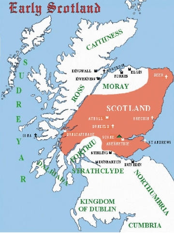

Antavla
King Kenneth II of Scotland
Kung av Scotland 971-995. Blev minst 41 år.

Far:
Malcolm I of Scotland (897 - 954)
Född:
före 954.
[1]
Död:
995 Fettercairn, Scotland.
[1]
Barn med ?
Barn:
Malcolm II "The Destroyer" of Scotland (954 - 1034)
Personhistoria
Årtal
Ålder
Händelse
897
Fadern
King Malcolm I of Scotland
föds 897 Moray, Scotland
[2]
<954
Födelse före 954
[1]
954
Sonen
King Malcolm II "The Destroyer" of Scotland
föds 954 Dunkeld, Perth and Kinross, Scotland
[2]
954
Fadern
King Malcolm I of Scotland
dör 954 Fetteresso, Kincardineshire, Scotland
[3]
995
Död 995 Fettercairn, Scotland
[1]
Källor
[1]
Wikipedia
[2]
James Patin
[3]
Britannica